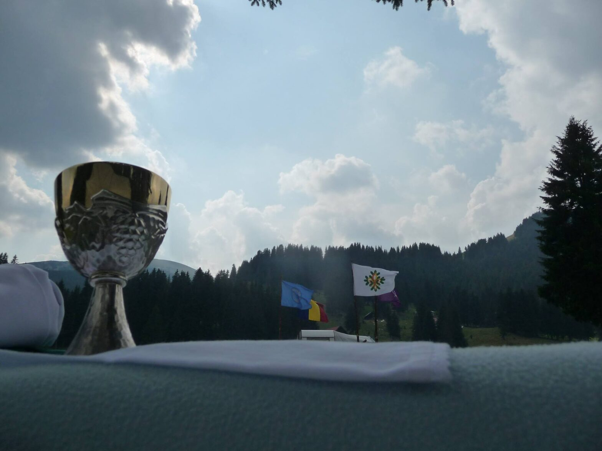

Poveștile verii: Campul

De când am intrat pe porțile largi ale cercetășiei mi s-a povestit despre campurile și hike-urile precedente. De fiecare dată ascultam cu inima strânsă dorindu-mi să am și eu parte măcar de o aventură ca și cele ce le auzeam și mi se păreau ireale. La scurt timp am avut parte de SCOUTocitul iernii și am crezut că nu se poate ceva mai greu. Până când am cunoscut termenul de ,,camp”…
În prima zi am aflat cu adevărat ce înseamnă efortul fizic. Trezită din somnul dulce din tren, am mers de la gara Sinaia până la Padina, bineînțeles cu o oprire de cartofi prăjiți la cota 2000. În final am ajuns uzi fleașcă, dar totuși fericiți de reușită. Am fost uimită când cu lemnele și buștenii căzuți, adunați din pădure am ridicat o poartă și am făcut bănci, dar ce m-a impresionat cel mai tare a fost invenția lui GMK constând într-o parașută tăiată, ancorată în cuie găsite pe munte și sfoară, din care am construit un adăpost pentru a ne feri de soare si ploaie. Pentru mâncare s-au construit vetre cu tot ce trebuie și, împărțiți pe patrule și „triula” liderilor, ne-am gătit singuri (sau, mă rog, am încercat…).
Hike-urile au fost unele dintre cele mai grele, dar totodată frumoase experiențe din viața mea. Am simțit o grămadă de sentimente diferite deodată: tristețe, fericire, adrenalină, încredere și groază. Indiferent de greutatea traseelor, aș mai face încă odată totul de la capăt, ca sa simt din nou mulțumirea și satisfacția din vârf. Momentele spirituale ale lui Adi au fost și sunt tipul de momente de care iți aduci aminte toată viața. Momente ca atunci când cu frontala pe cap și izoprenul în brațe, am plecat cu toții pe întuneric, departe de zgomotul „civilizației” din zona de camping, spre adâncul pădurii – doar stelele fiindu-ne martore la o seară de neuitat. Cei trei „vinovați”: Adi, Nadia și Marius au întins steluțe strălucitoare pe iarba umedă și fiecare luându-și steluța potrivită după merit. am reușit să ne răspundem unor întrebări care altfel poate ne-ar fi măcinat și acum.
Ca în orice activitate pe care am avut-o vreodată cu cercetașii, nu au lipsit momentele vesele și haioase… ca atunci când spuneam bancuri sau ca la bătaia cu apă în care absolut toată lumea se simțea ca într-o familie mare și fericită. Totuși, dacă cineva m-ar întreba ce mi-a plăcut cel mai tare în acest camp, aș răspunde întotdeauna că prietenia și iubirea pe care le-am simțit nu pot fi egalate cu nimic altceva. Și nu e simplul fapt de a-mi plăcea, ci e vorba de a simți din nou, de fiecare dată când mă întâlnesc cu persoanele cu care am împărțit experiența, același lucru…
Cristiana Grosu